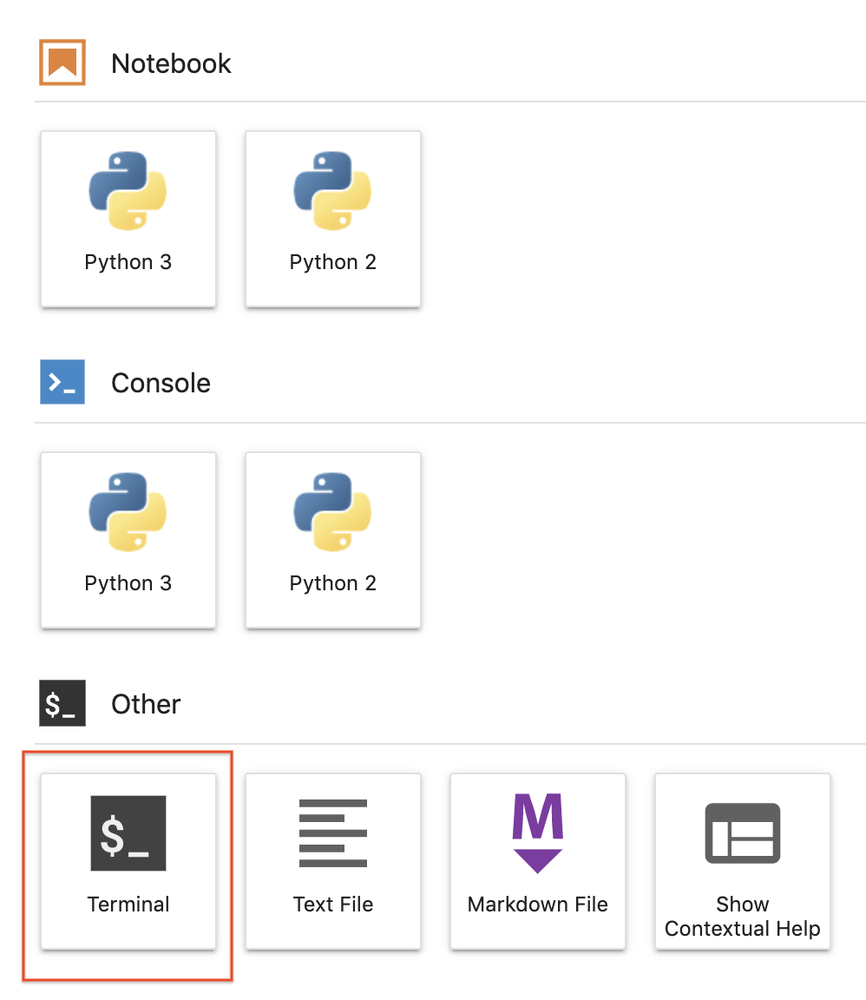
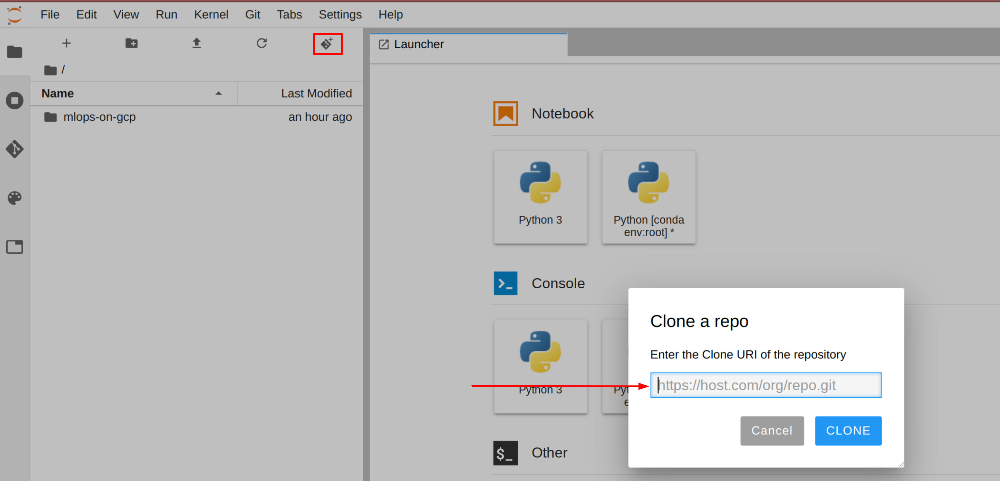
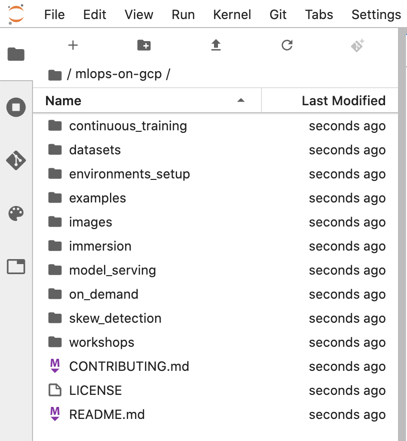

mlops-on-gcp ノートブックのクローンを JupyterLab インスタンス内に作成するには、次の手順を行います。
ステップ 1
JupyterLab で、[Terminal] アイコンをクリックして新しいターミナルを開きます。

ステップ 2
コマンドライン プロンプトで、次のコマンドを入力して Enter キーを押します。
クローンが作成されたリポジトリが JupyterLab UI に表示されない場合、上部に並んだメニューの [Git] --> [Clone a repository] から、UI を使ってクローンを作成できます（https://github.com/GoogleCloudPlatform/mlops-on-gcp）。

ステップ 3
リポジトリのクローンが作成されたことを確認するには、mlops-on-gcp ディレクトリをダブルクリックし、リポジトリのコンテンツが表示されることを確認します。このディレクトリには、本コースのすべての Jupyter ノートブック ラボで使用するファイルが含まれています。
